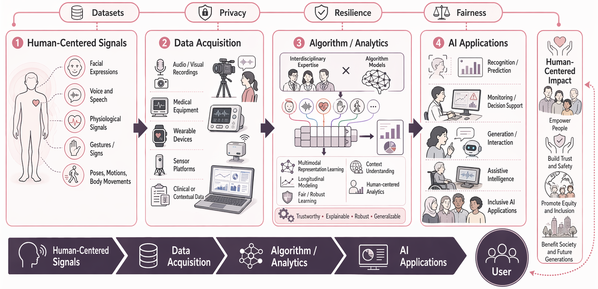
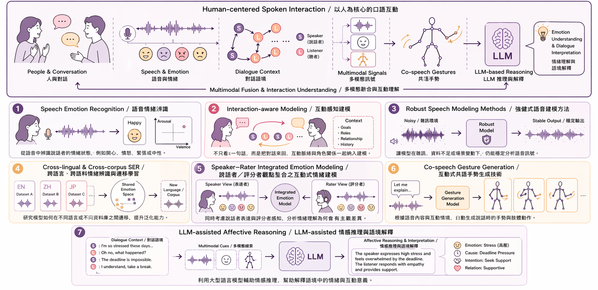
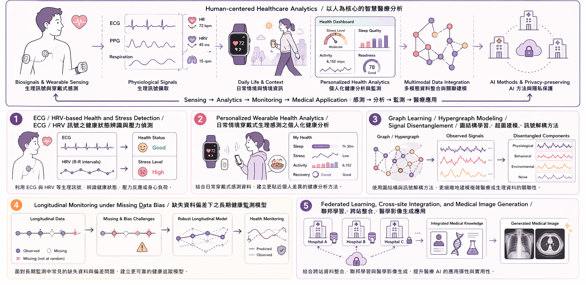
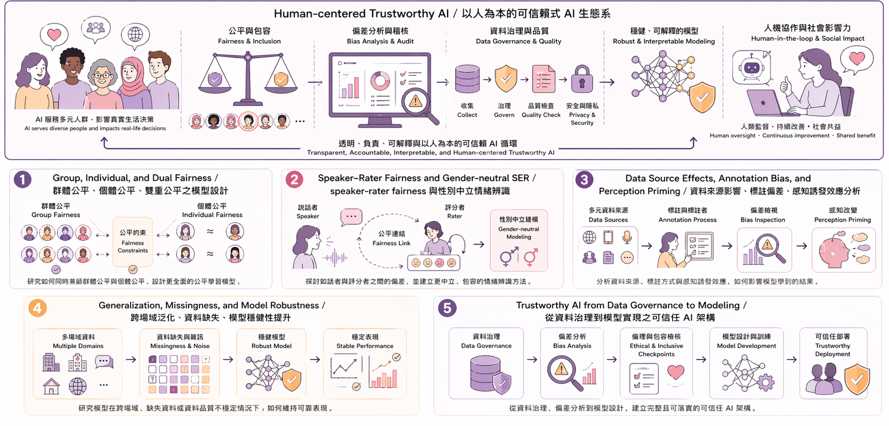

Research
Multimodal Signal Processing for Human-Centered Artificial Intelligence
Research Vision
Understanding Human Signals
My research views humans as complex dynamical systems, where internal states such as cognition, perception, emotion, production, and social interaction are expressed through measurable multimodal signals, including speech, language, physiology, gestures, facial expressions, and body movement. By combining signal processing, machine learning, and behavioral science, my work develops computational methods to infer these hidden human states and translate them into human-centered applications in affective computing, healthcare, and interactive AI.
My vision is to build AI systems that transform heterogeneous human signals into reliable, fair, and meaningful intelligence. As wearable sensing, speech interfaces, and interaction data become increasingly embedded in everyday life, I focus on algorithms that can handle human variability, missingness, contextual dynamics, and annotation bias, enabling multimodal AI to support real-world needs in emotion understanding, healthcare, well-being, and inclusive interaction.


口語互動智慧計算
Intelligent Spoken Interaction Computing
This direction studies how AI can understand spoken interaction as a multimodal and social process. Beyond recognizing words or isolated emotions, the goal is to model how speech, emotion, dialogue context, co-speech gestures, and LLM-assisted reasoning work together in real communication.
Research Question
How do speech, movement and a partner’s responses shape our interpretation of emotion?
Research Topics
- Speech emotion recognition and dialogue interpretation
- Interaction-aware modeling of speaker-listener dynamics
- Co-speech gesture analysis and generation
- LLM-assisted affective reasoning for contextual understanding
Additional areas of focus
- Speech emotion and affective speech understanding
- Co-speech gesture and body movement modeling
- Dialogue- and interlocutor-aware interaction analysis
- Naturalistic multimodal interaction datasets


智慧醫療健康分析
Intelligent Healthcare and Well-Being Analytics
This direction develops multimodal sensing and AI methods for healthcare, well-being, and clinical decision support. I focus on transforming wearable, physiological, behavioral, and medical data into robust analytics that can support monitoring, assessment, and real-world healthcare applications.
Research Question
What can wearable signals tell us about changes in health when observations are sparse or missing?
Research Topics
- ECG/HRV and wearable-based health and stress detection
- Personalized and longitudinal health analytics
- Graph learning for heterogeneous biosignals and medical data
- Federated, privacy-aware, and cross-site medical AI
Additional areas of focus
- Wearable and physiological sensing for stress and well-being
- Speech-motion-cognition modeling for clinical assessment
- Longitudinal and missingness-aware health analytics
- Edge- and privacy-aware healthcare AI systems


可信賴式人工智慧
Trustworthy and Inclusive AI
This direction addresses how AI systems can be reliable, fair, and inclusive when deployed in human-centered domains. My work studies bias and subjectivity in data, annotation, and evaluation, while developing robust and accountable models for diverse users and real-world contexts.
Research Question
Whose perception does an emotion model learn, and how does its performance vary across speakers and raters?
Research Topics
- Group, individual, and speaker-rater fairness
- Annotation bias, perception priming, and data source effects
- Generalization, missingness, and model robustness
- Trustworthy AI from data governance to deployment
Additional areas of focus
- Fairness across speakers, raters, groups, and individuals
- Bias and subjectivity in annotation and evaluation
- Robustness under noisy, missing, and cross-domain data
- Interpretable and accountable human-centered AI


Keywords: speech emotion recognition, multimodal interaction, spoken language technologies, healthcare analytics, wearable sensing, fairness, robustness, explainable AI, inclusive AI, human-centered computing.